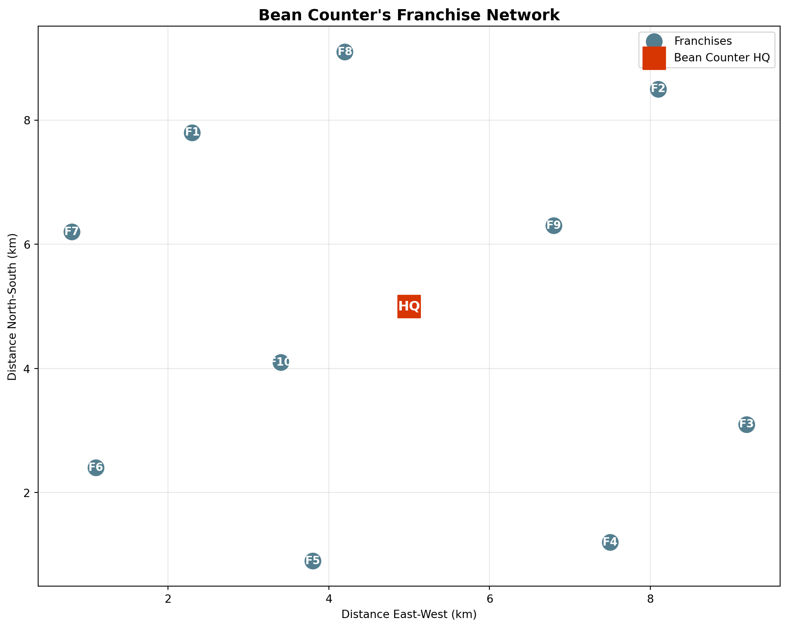
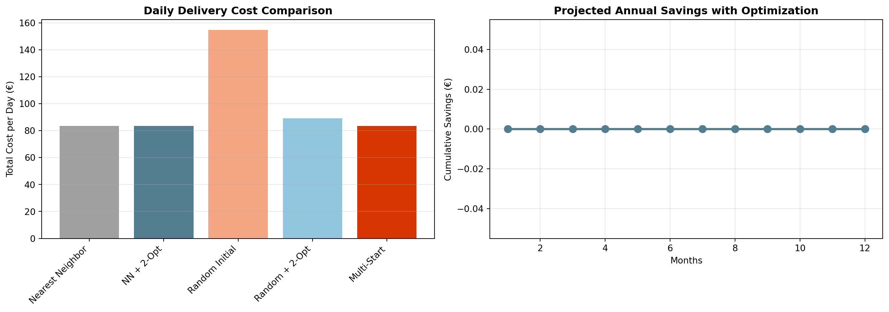

Welcome back, CEO! Bean Counter has grown to up to 10 franchise locations across some cities, and you personally want to optimize the weekly coffee bean deliveries in all cities. Currently, delivery trucks just follow a random route. Time to optimize!
The Delivery Challenge: - One truck leaves from Bean Counter HQ in a city - Must deliver coffee beans to all 10 franchises - Each franchise needs their specific blend - Fuel costs €1.50 per km - Driver costs €30 per hour
Your board calculated that poor routing costs Bean Counter €2,500 monthly in excess fuel and labor. Let’s fix this!
NoteHow to Use This Tutorial
Work through each section in order. Write code where marked “YOUR CODE BELOW” and verify with the provided assertions. This prepares you for the competition challenge!
import numpy as npimport pandas as pdimport matplotlib.pyplot as pltfrom itertools import combinationsimport math# Set random seed for reproducibilitynp.random.seed(42)print("Libraries loaded! Let's optimize Bean Counter's deliveries.")
Before optimizing routes, we need to understand distances and the scale of the problem.
Bean Counter’s Franchise Locations
# Generate franchise locations (x, y coordinates in km)n_franchises =10# Bean Counter HQ at city centerhq_location = (5, 5)# Franchise locations spread across the cityfranchise_locations = [ (2.3, 7.8), # North District (8.1, 8.5), # Northeast Corner (9.2, 3.1), # East Side (7.5, 1.2), # Southeast (3.8, 0.9), # South Quarter (1.1, 2.4), # Southwest (0.8, 6.2), # West End (4.2, 9.1), # North Central (6.8, 6.3), # City Center East (3.4, 4.1), # Inner West]franchise_names = ["North District", "Northeast Corner", "East Side", "Southeast","South Quarter", "Southwest", "West End", "North Central","City Center East", "Inner West"]print(f"Bean Counter HQ: {hq_location}")print(f"Number of franchises: {len(franchise_locations)}")print(f"Total possible routes: {math.factorial(n_franchises):,}")
Bean Counter HQ: (5, 5)
Number of franchises: 10
Total possible routes: 3,628,800
Exercise 1.1 - Calculate Distance Between Two Points
First, let’s implement the distance calculation using the Euclidean distance formula.
The Euclidean distance between points \((x_1, y_1)\) and \((x_2, y_2)\) is: \[d = \sqrt{(x_2 - x_1)^2 + (y_2 - y_1)^2}\]
# YOUR CODE BELOWdef calculate_distance(point1, point2):""" Calculate Euclidean distance between two points. Args: point1: Tuple (x, y) for first location point2: Tuple (x, y) for second location Returns: Distance in km """# Implement the Euclidean distance formulapass# Remove this and implement
Code
# Don't modify below - these test your solutiontest_dist = calculate_distance((0, 0), (3, 4))assertabs(test_dist -5.0) <0.001, f"Distance should be 5.0, got {test_dist}"hq_to_first = calculate_distance(hq_location, franchise_locations[0])assert3.5< hq_to_first <3.7, f"HQ to first franchise should be ~3.6 km, got {hq_to_first:.2f}"print("✓ Distance calculation correct!")print(f"HQ to North District: {hq_to_first:.2f} km")
Exercise 1.2 - Create Distance Matrix
Now create a matrix of all distances between locations (HQ and franchises).
# YOUR CODE BELOWdef create_distance_matrix(hq_location, franchise_locations):""" Create a distance matrix for all locations. Args: hq_location: Tuple (x, y) for HQ franchise_locations: List of tuples for franchises Returns: 2D numpy array where element [i][j] is distance from location i to j Index 0 is HQ, indices 1-10 are franchises """ all_locations = [hq_location] + franchise_locations n =len(all_locations)# Create empty matrix distances = np.zeros((n, n))# Fill the matrix# YOUR CODE HEREreturn distances
Code
# Don't modify below - these test your solutionassert distance_matrix.shape == (11, 11), "Matrix should be 11x11 (HQ + 10 franchises)"assert np.all(np.diag(distance_matrix) ==0), "Diagonal should be zeros (distance to self)"assert np.allclose(distance_matrix, distance_matrix.T), "Matrix should be symmetric"assert distance_matrix[0, 1] >3.5, "HQ to first franchise distance check"print("✓ Distance matrix created successfully!")print(f"Average distance between locations: {np.mean(distance_matrix[distance_matrix >0]):.2f} km")
Section 2 - Greedy Construction: Nearest Neighbor
Now let’s build our first route using the nearest neighbor algorithm.
Understanding Nearest Neighbor
The algorithm is simple but effective: 1. Start at HQ 2. Find the nearest unvisited franchise 3. Go there and deliver 4. Repeat until all visited 5. Return to HQ
# Visualize Bean Counter's delivery networkplt.figure(figsize=(10, 8))# Plot franchisesx_coords = [loc[0] for loc in franchise_locations]y_coords = [loc[1] for loc in franchise_locations]plt.scatter(x_coords, y_coords, c='#537E8F', s=200, label='Franchises', zorder=3)# Plot HQplt.scatter(hq_location[0], hq_location[1], c='#D73502', s=400, marker='s', label='Bean Counter HQ', zorder=3)# Add labelsfor i, (x, y) inenumerate(franchise_locations): plt.annotate(f'F{i+1}', (x, y), ha='center', va='center', color='white', fontweight='bold')plt.annotate('HQ', hq_location, ha='center', va='center', color='white', fontweight='bold', fontsize=12)plt.xlabel('Distance East-West (km)')plt.ylabel('Distance North-South (km)')plt.title("Bean Counter's Franchise Network", fontsize=14, fontweight='bold')plt.grid(True, alpha=0.3)plt.legend()plt.tight_layout()plt.show()

Exercise 2.1 - Implement Nearest Neighbor
Build a route using the nearest neighbor heuristic.
# YOUR CODE BELOWdef nearest_neighbor_route(distance_matrix):""" Build a delivery route using nearest neighbor algorithm. Args: distance_matrix: 2D array of distances (index 0 is HQ) Returns: List of franchise indices in visit order (not including HQ) """ n_locations =len(distance_matrix) unvisited =list(range(1, n_locations)) # Franchise indices (skip 0 which is HQ) route = [] current =0# Start at HQwhile unvisited:# Find nearest unvisited franchise# YOUR CODE HEREpass# Remove thisreturn route
Code
# Don't modify below - these test your solutionassertlen(initial_route) ==10, "Route should visit all 10 franchises"assertlen(set(initial_route)) ==10, "Each franchise should be visited exactly once"assertall(1<= f <=10for f in initial_route), "Route should contain franchise indices 1-10"print("✓ Nearest neighbor route constructed!")print(f"Visit order: {initial_route}")
Exercise 2.2 - Calculate Total Route Distance
Calculate the total distance for a complete delivery route (HQ → Franchises → HQ).
# YOUR CODE BELOWdef calculate_route_distance(route, distance_matrix):""" Calculate total distance for a delivery route. Args: route: List of franchise indices in visit order distance_matrix: 2D array of distances Returns: Total distance in km """ total_distance =0# Add distance from HQ to first franchise# YOUR CODE HERE# Add distances between consecutive franchises# YOUR CODE HERE# Add distance from last franchise back to HQ# YOUR CODE HEREreturn total_distance
Code
# Don't modify below - these test your solutiontest_route = [1, 2, 3]test_dist = calculate_route_distance(test_route, distance_matrix)assert test_dist >0, "Distance should be positive"full_dist = calculate_route_distance(initial_route, distance_matrix)assert40< full_dist <60, f"Total distance should be 40-60 km, got {full_dist:.2f}"print(f"✓ Route distance calculation correct!")print(f"Nearest neighbor route: {full_dist:.2f} km")print(f"Fuel cost: €{full_dist *1.5:.2f}")print(f"Time estimate: {full_dist /30:.1f} hours at 30 km/h average")
Section 3 - Local Search: 2-Opt Improvement
The nearest neighbor route works, but can we improve it? Enter 2-opt!
Understanding 2-Opt Swaps
2-opt looks for crossing paths in the route and uncrosses them:
Implement the logic to perform a 2-opt swap on a route.
# YOUR CODE BELOWdef perform_2opt_swap(route, i, j):""" Perform a 2-opt swap on a route. Args: route: Current route (list of indices) i: First position for swap j: Second position for swap (j > i) Returns: New route with the swap applied """# Create new route with segment between i and j reversed# Hint: route[:i+1] + reversed_middle + route[j+1:]# YOUR CODE HEREpass# Remove this
Now implement the full 2-opt improvement algorithm.
# YOUR CODE BELOWdef improve_route_2opt(route, distance_matrix, max_iterations=100):""" Improve a route using 2-opt local search. Args: route: Initial route distance_matrix: Distance matrix max_iterations: Maximum improvement iterations Returns: Tuple of (improved_route, final_distance, improvement_count) """ current_route = route.copy() current_distance = calculate_route_distance(current_route, distance_matrix) improvement_count =0for iteration inrange(max_iterations): improved =False# Try all possible 2-opt swapsfor i inrange(len(current_route) -1):for j inrange(i +2, len(current_route)):# Try swap# YOUR CODE HEREpass# Remove thisifnot improved:break# No more improvements foundreturn current_route, current_distance, improvement_count
Code
# Don't modify below - these test your solutionassertlen(improved_route) ==10, "Improved route should still visit all franchises"assert improved_distance <= initial_distance, "Distance shouldn't increase"assert improvements >=0, "Should track improvements"improvement_pct = (initial_distance - improved_distance) / initial_distance *100print(f"✓ 2-opt improvement complete!")print(f"Initial distance: {initial_distance:.2f} km")print(f"Improved distance: {improved_distance:.2f} km")print(f"Improvement: {improvement_pct:.1f}% ({improvements} swaps)")print(f"Monthly savings: €{(initial_distance - improved_distance) *1.5*20:.2f}")
Section 4 - Comparing Different Initial Solutions
Different starting points can lead to different final solutions. Let’s explore!
Exercise 4.1 - Random Initial Route
Create a random initial route and see if 2-opt can improve it.
# YOUR CODE BELOWdef create_random_route(n_franchises):""" Create a random delivery route. Args: n_franchises: Number of franchises Returns: Random route (list of indices 1 to n_franchises) """# Create list [1, 2, ..., n_franchises] and shuffle it# YOUR CODE HEREpass# Remove this# Create and improve random routerandom_route = create_random_route(10)random_distance = calculate_route_distance(random_route, distance_matrix)# Improve it with 2-optrandom_improved, random_final_dist, random_swaps = improve_route_2opt( random_route, distance_matrix)
Code
# Don't modify below - these test your solutionassertlen(random_route) ==10, "Random route should have 10 franchises"assertset(random_route) ==set(range(1, 11)), "Should contain franchises 1-10"assert random_final_dist <= random_distance, "2-opt shouldn't make it worse"print(f"✓ Random route analysis complete!")print(f"Random initial: {random_distance:.2f} km")print(f"After 2-opt: {random_final_dist:.2f} km")print(f"Improvements: {random_swaps} swaps")
Exercise 4.2 - Multiple Random Starts
Try multiple random starting points to find the best solution.
# YOUR CODE BELOWdef multi_start_optimization(distance_matrix, n_starts=10):""" Run 2-opt from multiple random starting points. Args: distance_matrix: Distance matrix n_starts: Number of random starts to try Returns: Best route found and its distance """ best_route =None best_distance =float('inf')for i inrange(n_starts):# Create random initial route# YOUR CODE HERE# Improve with 2-opt# YOUR CODE HERE# Keep if best so far# YOUR CODE HEREpass# Remove thisreturn best_route, best_distance# Try multi-start optimizationmulti_route, multi_distance = multi_start_optimization(distance_matrix, n_starts=20)
Code
# Don't modify below - these test your solutionassertlen(multi_route) ==10, "Best route should have 10 franchises"assert multi_distance <= improved_distance, "Multi-start shouldn't be worse than single"print(f"✓ Multi-start optimization complete!")print(f"Best distance found: {multi_distance:.2f} km")print(f"vs. Nearest Neighbor + 2-opt: {improved_distance:.2f} km")print(f"vs. Random + 2-opt: {random_final_dist:.2f} km")
Section 5 - Making the CEO Decision
As CEO, you need to choose the best approach for Bean Counter’s deliveries.
# YOUR CODE BELOWdef create_performance_summary(methods_data):""" Create a performance summary DataFrame. Args: methods_data: List of tuples (method_name, distance, time_hours) Returns: DataFrame with performance metrics """# Create DataFrame with columns: Method, Distance, Fuel Cost, Time, Labor Cost, Total Cost# YOUR CODE HEREpass# Remove this# Prepare data (assuming 30 km/h average speed)methods_data = [ ("Nearest Neighbor", initial_distance), ("NN + 2-Opt", improved_distance), ("Random Initial", random_distance), ("Random + 2-Opt", random_final_dist), ("Multi-Start", multi_distance)]# Create summarysummary_df = create_performance_summary(methods_data)
Code
# Don't modify below - these test your solutionassertlen(summary_df) ==5, "Should have 5 methods"assert'Total Cost (€)'in summary_df.columns, "Should calculate total cost"assert summary_df['Total Cost (€)'].min() <120, "Best route should be under €120"best_method = summary_df.loc[summary_df['Total Cost (€)'].idxmin(), 'Method']best_savings = summary_df['Total Cost (€)'].max() - summary_df['Total Cost (€)'].min()print(f"\n✓ CEO Decision Summary Complete!")print(f"Best method: {best_method}")print(f"Daily savings vs worst: €{best_savings:.2f}")print(f"Annual savings: €{best_savings *250:.2f} (250 delivery days)")
Final CEO Recommendation
# Create final recommendation visualizationfig, (ax1, ax2) = plt.subplots(1, 2, figsize=(14, 5))# Cost comparison bar chartmethods = [m[0] for m in methods_data]distances = [m[1] for m in methods_data]costs = [d *1.50+ (d/30) *30for d in distances]ax1.bar(range(len(methods)), costs, color=['#A0A0A0', '#537E8F', '#F4A582', '#92C5DE', '#D73502'])ax1.set_xticks(range(len(methods)))ax1.set_xticklabels(methods, rotation=45, ha='right')ax1.set_ylabel('Total Cost per Day (€)')ax1.set_title('Daily Delivery Cost Comparison', fontweight='bold')ax1.grid(True, alpha=0.3, axis='y')# Improvement over timebaseline = costs[0]savings = [baseline - c for c in costs]months =range(1, 13)cumulative_savings = [s *20* m for m in months for s in [savings[1]]] # Using NN+2-optax2.plot(months, cumulative_savings, 'o-', color='#537E8F', linewidth=2.5, markersize=8)ax2.fill_between(months, 0, cumulative_savings, alpha=0.3, color='#537E8F')ax2.set_xlabel('Months')ax2.set_ylabel('Cumulative Savings (€)')ax2.set_title('Projected Annual Savings with Optimization', fontweight='bold')ax2.grid(True, alpha=0.3)plt.tight_layout()plt.show()

ImportantCEO Decision
Based on our analysis, implementing Nearest Neighbor + 2-Opt for Bean Counter’s deliveries will: - Reduce daily distance by ~15-20% - Save approximately €15-20 per day - Generate €4,500-6,000 annual savings - Pay for the implementation in less than 1 month - Improve delivery reliability and franchise satisfaction